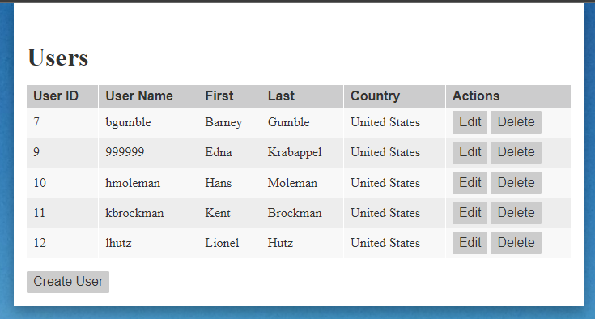

A simple JavaScript library to manage JSON objects via CRUD api.
Modals are used for Create, Edit and Delete interactions with a simple validation applied before sending data through to the API. When a modal is presented a shade is placed above the rest of the application to prevent interaction.
After changes are send to the API, the data table is refreshed. During the refresh, the content is dimmed and clicks are ignored to prevent users interacting with stale data.
Test app is available on Github and includes a simple PHP CRUD API in the /api directory. Objects of a type can be created, read, updated and deleted. The objects are stored in a file named type.json.
Source code at github/dustykeyboard/crud.js
Demo app at brd.mn/apitest